Alle Zahlen und Namen auf dieser Seite sind erfunden. Die Screenshots
zeigen die echte Anwendung, befüllt aus einem Demo-Datensatz, den
scripts/seed_demo.py reproduzierbar erzeugt – Markt Müller, Getränke Nord
und Beispielstadt existieren nicht.
01 — ÜberblickEin Dashboard statt zehn Tabellenblätter
Vermögen über alle Konten, Girokonten, Sparkonten, Depots und Darlehen getrennt ausgewiesen. Der Saldo eines Kontos ist Startsaldo plus alle gebuchten Buchungen; geplante Buchungen bleiben draußen und zählen nur in der Liquiditätsvorschau.
Die Erinnerungskarte oben wird bei jedem Aufruf neu berechnet und nirgends gespeichert: Sie verschwindet genau dann, wenn ihre Ursache weg ist.
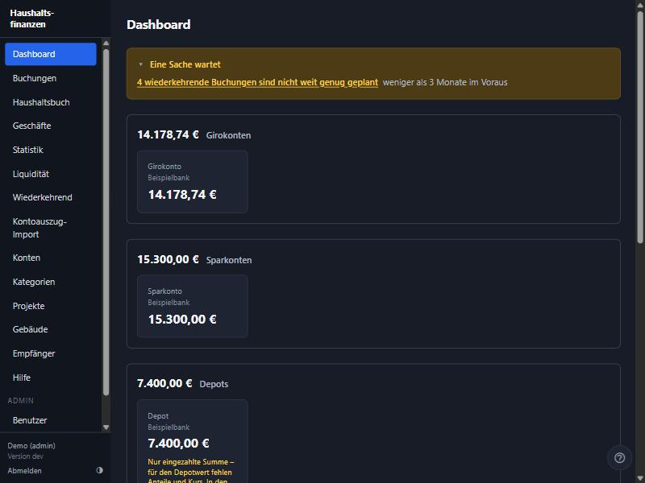
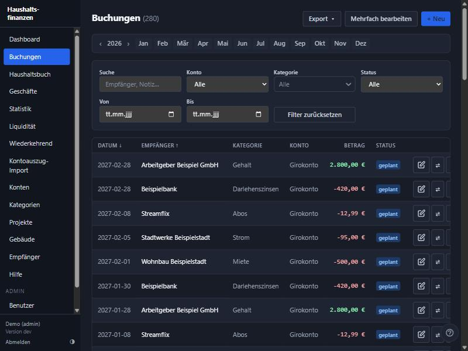
02 — ErfassenDrei Wege, ein Bestand
Buchungen entstehen manuell, aus einem Kassenzettel-Foto oder aus einem Kontoauszug-PDF. Alle drei landen in derselben Liste, mit Status geplant oder gebucht.
- Umbuchungen zwischen eigenen Konten werden als Transfer verknüpft und zählen in keiner Auswertung doppelt.
- Der Bankrohtext bleibt an der importierten Buchung erhalten – daraus lässt sich direkt eine Import-Regel anlegen.
- Mehrfachbearbeitung setzt Kategorie, Empfänger oder Status für eine ganze Auswahl.
03 — HaushaltsbuchKassenzettel mit Positionen
Ein Beleg wird fotografiert, die Texterkennung liest die Preiszeilen, und einzelne Artikel lassen sich auf verschiedene Kategorien aufteilen – Lebensmittel und Haushaltswaren getrennt, obwohl beides auf demselben Zettel steht.
Was nicht einzeln aufgeteilt wird, fällt als Rest automatisch auf die Standard-Kategorie des Geschäfts.
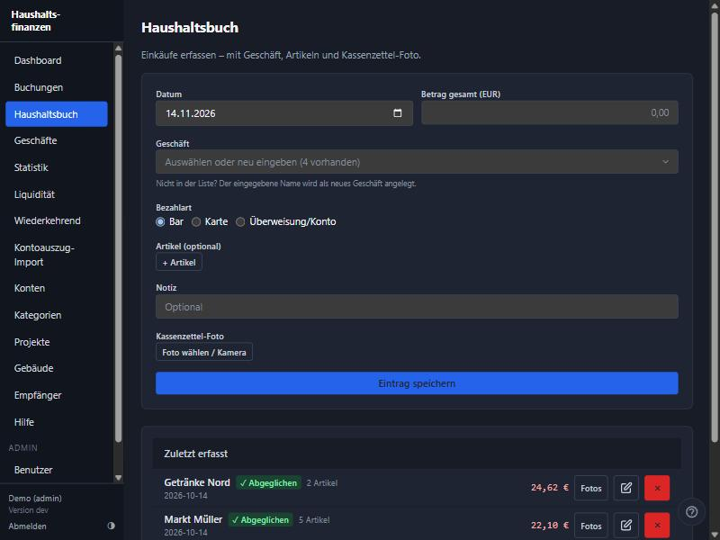
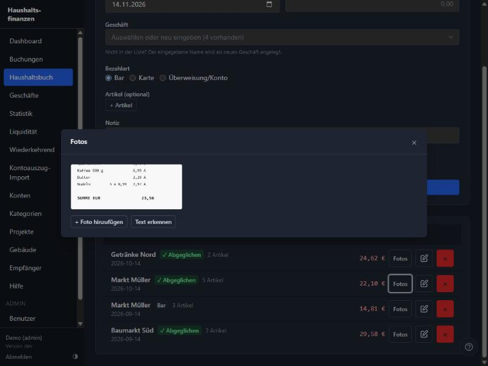
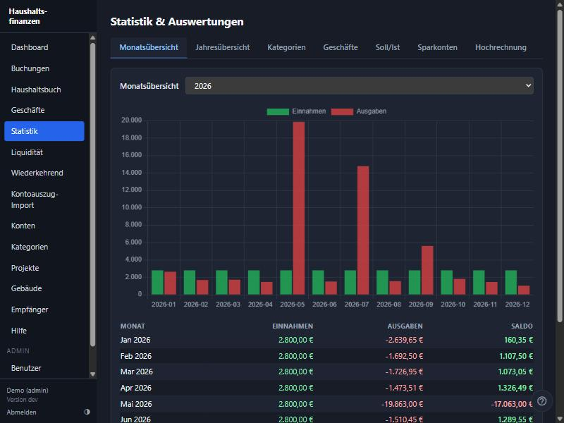
04 — AuswertenMonat, Jahr, Kategorie, Soll/Ist
Einnahmen und Ausgaben je Monat und Jahr, Ausgaben nach Kategorie und nach Geschäft, Soll/Ist gegen die Planung, eine Hochrechnung aus den wiederkehrenden Vorlagen und die Sparkonten-Entwicklung je Quartal.
Welche Buchungen zählen, hängt von der Auswertung ab: Transfers nie, geplante Buchungen überall außer im Soll/Ist-Vergleich. Die Hilfe erklärt das pro Bereich.
05 — VorausschauenLiquidität aus wiederkehrenden Vorlagen
Aus Vorlagen wie Miete, Gehalt oder Versicherung erzeugt die App geplante Buchungen. Die Kurve startet beim heutigen Saldo und addiert von dort nur, was geplant ist.
Wird eine geplante Buchung später per Kontoauszug einer echten Bankbuchung zugeordnet, wechselt sie auf gebucht und wandert aus der Vorschau in den Saldo – ohne doppelt zu zählen.
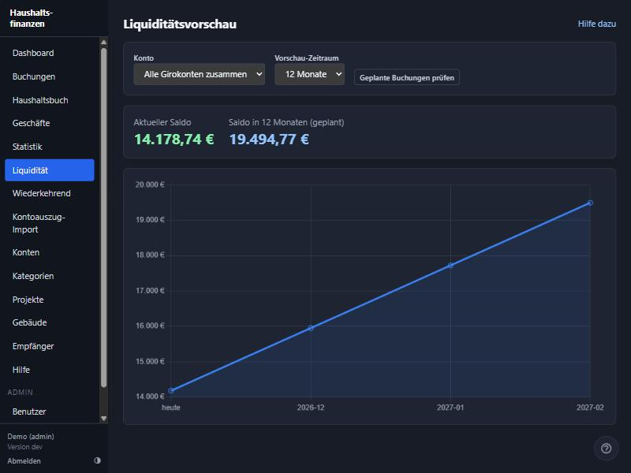
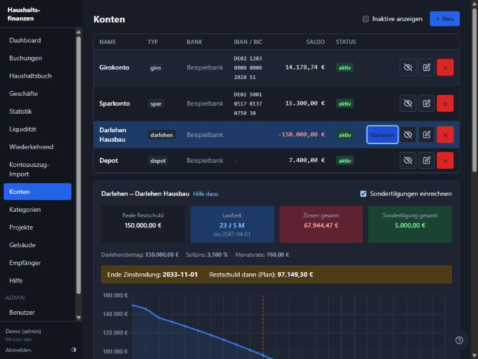
06 — DarlehenTilgungsplan, der sich selbst rechnet
Ein Konto vom Typ Darlehen bekommt Betrag, Zinssatz, Rate und Tilgungsbeginn – den Rest rechnet die App: Restschuld-Verlauf, Laufzeit, Gesamtzinsen, Ende der Zinsbindung. Sondertilgungen lassen sich einzeln ein- und ausrechnen.
Für Zwischenfinanzierungen gibt es die endfällige Variante: nur Zinsen, Ablösung in einer Summe am Laufzeitende.
07 — ProjektePlan gegen Ist, Posten für Posten
Ein Bauprojekt bekommt geplante Posten – Dach, Fenster, Heizung. Echte Buchungen werden mit einem Posten verknüpft, und die Seite stellt Budget, Plan, Ist und Abweichung nebeneinander.
Verknüpft wird immer von Hand: Ein Posten zieht sich keine Buchungen von selbst.
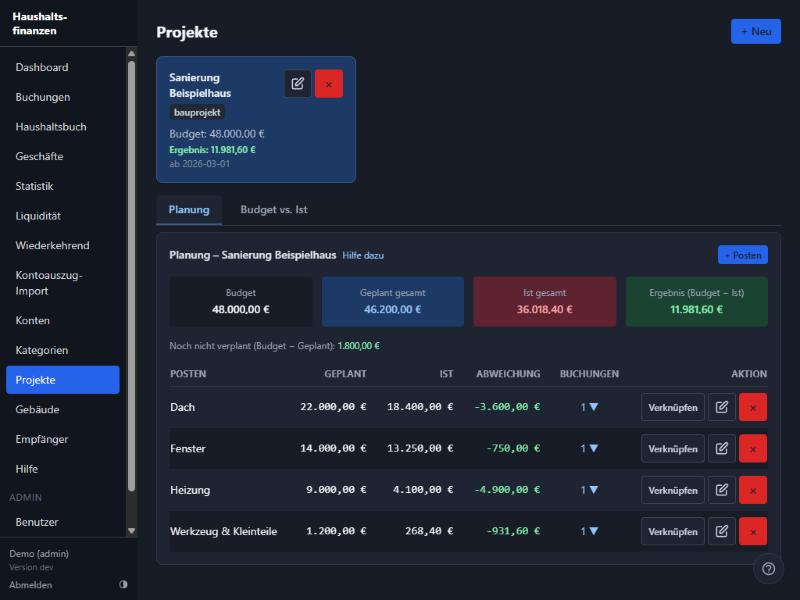
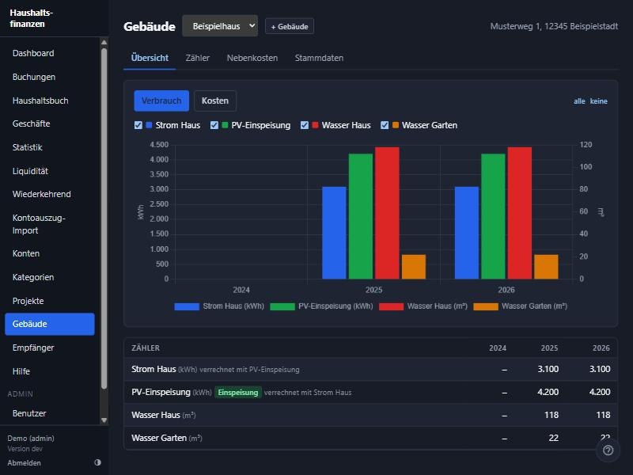
08 — GebäudeZähler, Verbrauch, Nebenkosten
Gespeichert werden nur Zählerstände, der Verbrauch wird immer daraus berechnet – eine korrigierte Ablesung kann deshalb nie zu einem widersprüchlichen Verbrauch führen.
- Kosten kommen aus den Buchungen der Kategorie am Zähler; keine zweite Buchführung.
- Zählerwechsel bleibt eine durchgehende Reihe, Zwischenzähler werden abgezogen.
- Die PV-Einspeisung mindert die Stromkosten in Euro, nicht in Kilowattstunden.
09 — HilfeErklärt wird da, wo es passiert
Jeder Bereich hat einen Hilfe-Abschnitt, dazu kommen die übergreifenden Ketten – Import-Regeln, Abgleich, Wiederkehrend bis Liquidität. Der Knopf „?" öffnet immer den Abschnitt zur gerade geöffneten Seite.
Flussdiagramme stehen dort, wo es tatsächlich verzweigt: wann eine Zeile als Dublette gilt, welcher Buchungsstatus in welche Auswertung fließt.
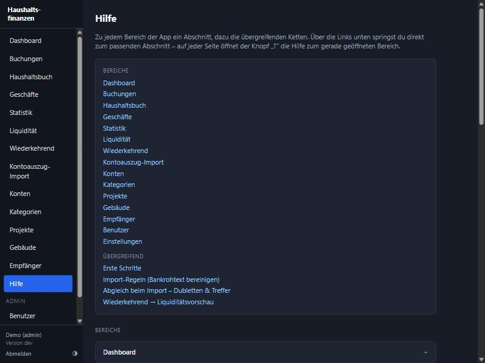
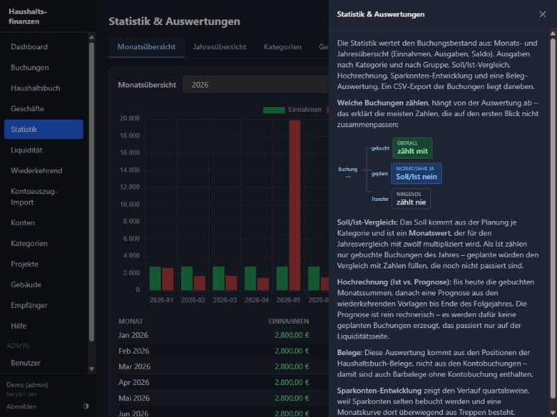
10 — TechnikWas darunter läuft
| Backend | FastAPI, SQLAlchemy, Alembic-Migrationen |
|---|---|
| Datenbank | SQLite, mehrere Bestände nebeneinander umschaltbar |
| Frontend | React, Vite, Tailwind, als PWA installierbar |
| Belege | Tesseract-OCR mit Geschäfts-Mustern je Kassenzettel |
| Kontoauszüge | pdfplumber, Muster je Bank statt Parser je Bank |
| Betrieb | lokal per Skript oder als Docker-Image im Heimnetz |
| Anmeldung | Benutzer mit Rollen, zweiter Faktor außerhalb des Heimnetzes |
| Sicherung | automatisches Backup mit Belegen und Kontoauszügen |
11 — AusprobierenDemo-Datensatz selbst erzeugen
Der Datensatz hinter diesen Screenshots entsteht aus einem Skript – ohne eine Zeile echter Daten:
backend/.venv/Scripts/python.exe scripts/seed_demo.py --ziel dev-db/demo.db
Danach die Datei in den Einstellungen als Datenbank registrieren und umschalten.
Anmeldung in der Demo: Demo / demo1234.
Die Namen stammen aus einer festen Platzhalter-Welt, die in
docs/beispieldaten.md steht – dieselbe, die auch in den Hilfetexten
verwendet wird.